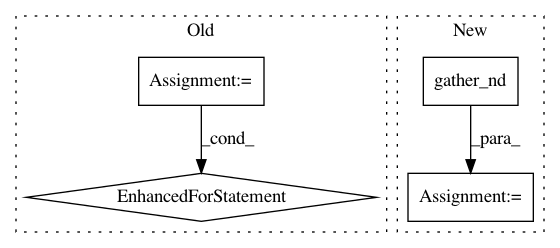

4887ef8baecbf5315ec0f235e56a4f93cd05aad7,cleverhans/attacks_tf.py,,spm,#Any#Any#Any#Any#Any#Any#Any#Any#Any#Any#Any#Any#Any#Any#,1947
Before Change
accs = []
// Perform the transformation
for (dx, dy, angle) in transforms:
adv_xs.append(_apply_transformation(x, dx, dy, angle, batch_size))
preds_adv = model.get_logits(adv_xs[-1])
// Compute accuracy
accs.append(tf.count_nonzero(tf.equal(tf.argmax(y, axis=-1),
tf.argmax(preds_adv, axis=-1))))
// Return the adv_x with worst accuracy
adv_xs = tf.stack(adv_xs)
accs = tf.stack(accs)
return tf.gather(adv_xs, tf.argmin(accs))
After Change
tf.cast(worst_sample_idx, tf.int32)
], axis=1)
transformed_ims_bshwc = tf.einsum("sbhwc->bshwc", transformed_ims)
after_lookup = tf.gather_nd(transformed_ims_bshwc, keys) // BHWC
return after_lookup
In pattern: SUPERPATTERN
Frequency: 3
Non-data size: 4
Instances
Project Name: tensorflow/cleverhans
Commit Name: 4887ef8baecbf5315ec0f235e56a4f93cd05aad7
Time: 2018-10-04
Author: nottombrown@gmail.com
File Name: cleverhans/attacks_tf.py
Class Name:
Method Name: spm
Project Name: NifTK/NiftyNet
Commit Name: 534c4dc7423681faab78d1829c1ec3c31ffb8330
Time: 2018-01-30
Author: wenqi.li@ucl.ac.uk
File Name: niftynet/layer/resampler.py
Class Name: ResamplerLayer
Method Name: _resample_inv_dst_weighting
Project Name: Bihaqo/t3f
Commit Name: 7ca9b35c96b9f9d4300fe32e0c417cfc95e4d094
Time: 2017-10-16
Author: novikov@bayesgroup.ru
File Name: t3f/ops.py
Class Name:
Method Name: tt_sparse_flat_inner